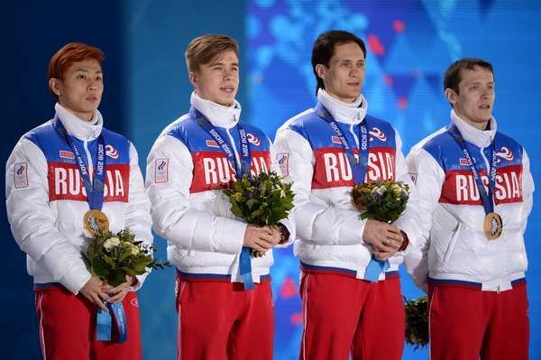

Шорт-трек(эстафета)
Победители: Виктор Ан, Семен Елистратов, Владимир Григорьев, Руслан Захаров (эстафета)
Сборная России (Виктор Ан, Семен Елистратов, Владимир Григорьев, Руслан Захаров) выиграла золотую медаль в эстафете на 5000 м на Олимпиаде-2014 в Сочи с олимпийским рекордом. Виктор Ан стал шестикратным олимпийским чемпионом в шорт-треке. Отметим, что он уже на второй Олимпиаде выигрывает медали во всех четырех дисциплинах: в Турине-2006 в составе сборной Кореи у него было 3 золота (1000 м, 1500 м, эстафета) и 1 бронза (500 м). В Сочи у него также 3 золота (500 м, 1000 м, эстафета) и 1 бронза (1500 м). Кроме того, Ан догнал знаменитого американца Аполо Антона Оно по количеству олимпийских медалей – по 8.